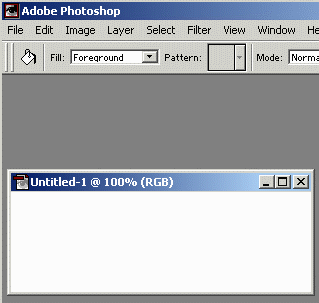

Icons as Bitmaps
Top
You can save your own icons as
bitmap images rather than as a standard
ICO icon file. These
bitmap images can be used in a wider variety
of applications, such as web pages, than Windows icon files. Of course you can
use single images in your web page, however, it is also possible
to combine two or more bitmap "building blocks" into more complex images.
The following example will use two icons from the shareware version of Icon Library
and combine them into a single image. The result will be saved as a
GIF
file ready for use in a web page. Photoshop is used for manipulating images,
however, other image editing programs such as PaintShop could also be used.
- Extract two icons from Icon
Library and save them as BMP files. Make sure to select
Bitmap Files (*.BMP) for the File Type when saving these
icon images. Two aircraft images used in this example are highlighted.
- Save the first image.
- Save the second image.
- You should now have two bitmap image files saved in your
disk folder. Please note that if the icon file contains multiple icons
then these will be stored as separate bitmap files. For example, if an
ICO file contains three icons with image sizes of 16x16, 32x32
and 48x48 pixels then three bitmap images of the same sizes will be
saved in your disk folder. Most of the icons in Icon Library will only
contain a single 32x32 pixel image.
- Start Photoshop and create a new canvas of the required size.

- Open both airplane BMP images in Photoshop
- Select all of the first BMP image by highlighting the window containing
the image and then typing a CTL-A. and use the Move Tool to
drag the BMP image onto you new image. This will create a new layer
containing an image of the first airplane.

- Repeat with the second BMP image. You should now have two airplanes
on two separate layers on you new canvas.

- Move the airplane images into their correct positions
- Merge all the image layers into a single layer using the Photoshop
Layer -> Flatten Image menu option.
- Select the Paint Bucket Tool and choose a suitable color for
the sky backgroud. Fill the background.
- Save the final image as either a JPG or GIF file.
- Here is example of a banner image used to advertise the previous version
of Icon Library. It was created using multiple icons and Photoshop manipulation.
- Quite complex images can be created using a larger number of icons as
building blocks. The size of these icon building blocks are not as large as
Clip Art so may not be suitable for all occasions, however, icons can
be combined with Clip Art to form new custom images. It is also possible to
increase the size of icon images but they will end up looking quite blocky.
This may be the desired effect, or it may be possible to eliminate the blockiness
with various Photoshop techniques. Possibilities are endless and only limited
by your imagination! :)